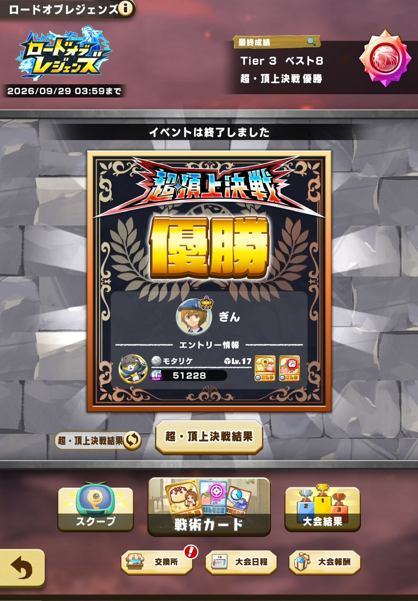

ロードオブレジェンズの「超・頂上決戦」で優勝しました！投票してくださった方、応援してくださった方、本当にありがとうございました！
ロードオブレジェンズは、ロードオブマスターズの頂上決戦に出た16名と、ロードオブレジェンズを勝ち上がった16名、あわせて32名で戦うトーナメントです。その決勝の舞台が超・頂上決戦で、今回が第1回でした。
エントリーはモタリケ。あのときのモタリケが頂上決戦出場を経て、ついに超・頂上決戦の舞台にあがりました。モタリケのちょっといいとこに期待です。
今月前半のロードオブマスターズでもベスト4に入っていたので、なんやかんや強い個体だと思います。
結果発表って、いつなんでしょうか。投票期間は書いてあるのに、いつ発表するのかはどこにも書いてないんですよね。
ローマスは21時に結果が出るのに、こっちはどうやら朝一発表っぽいです。朝の結果発表はやめてほしいです。朝まで結果が分からないまま寝るのは、さすがにドキドキしすぎます。発表は9時がいいです。夜の9時です。
しかも朝起きたら、LINEのオプチャで「〇〇さん優勝おめでとう」みたいなネタバレがたぶん飛び交ってるんですよ。だから起きてもLINEは見ないようにしないといけません。正直、見るのがかなり怖いです。
とはいえ、ローマスの初回頂上決戦で優勝した配信者を俺は知っています。……はい、俺です。あのときは正直、俺の個体が強かったと思います。調査兵モッチーで、出場者の中で一番仕上がっていたのはみなさんも感じていたんじゃないでしょうか。4フォイブリチェでしたし。
でも、今回はそうじゃないんですよね。今月のローマスでもベスト4で惜敗でしたし。

……と、前夜はこんな感じでビビっていたんですが、朝起きたら優勝していました。2024年12月にロードオブマスターズの第1回頂上決戦で優勝していて、今回のロードオブレジェンズ第1回超・頂上決戦でも優勝です。どうやら「初代」にだけ妙に強いみたいです。以上です。
モタリケのかなりいいとこ見れました。改めて応援、投票ありがとうございました！
ゆっくり余韻に浸りたいところですが、今日からもう大イベント祭です。新ストーリーの実装が予定されていて、9月30日にはガチャ更新も来ます。休む暇がまったくありません。
大会は勝ったり負けたりですが、結局ライモンはみんなでわいわい遊んでいるのが一番楽しいです。これからもみんなで一緒にライモンを楽しみましょう！